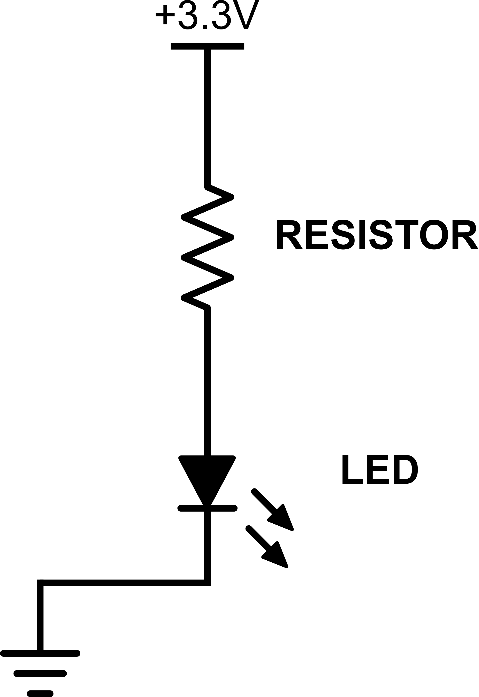

So far, we’ve discussed some basics of software programming, we’ve discussed electricity and circuits and we’ve even written our first program and built our first circuit. But, the point of the RaspberrySTEMTM platform is the integration of the software and hardware, and more specifically, using software to control the hardware to make it do interesting and useful things.
In this project, for the first time, we’ll use the software to control the hardware. And, that’s where General Purpose Input/Outputs (GPIOs) come into play.
GPIOs are pins (holes) on the connector board that can be individually attached to the breadboard with jumper wires. The purpose of GPIOs are like the nerve-system of the platform – their job is to relay signals from the brain (the Raspberry Pi computer) to the muscles (the components of the circuit) and to take signals from the muscles and relay it back to the brain.
The Raspberry Pi has 17 GPIOs, and each one can be set to act as an input (it can take a signal from somewhere else and relay it to the Raspberry Pi) or set to act as an output (it can relay a signal from the Raspberry Pi to somewhere else).
When a GPIO is configured as an output, the software has the ability to set the GPIO to do one of two things:
Generate 0V of electricity (just like a ground)
Generate 3.3V of electricity (just like a battery or any other power source)
By switching the GPIO “on” or “off,” it can be used to control components on the breadboard or elsewhere.
As a very simple example, you could hook a GPIO to an LED, and then control whether the LED was turned on or off by turning the GPIO on or off. In fact, since we’ve already built a circuit with an LED, why don’t we modify it to use a GPIO so that we can control that LED through software…
Here is the schematic from our original circuit:
To attach the LED to a GPIO, we’re going to modify our circuit as follows:

Schematic: Lighting an LED with a GPIO
You’ve probably noticed that all we did was replaced the connection from the LED to ground with a connection from the LED to a GPIO. Let’s see how this will work…
We’ve already discussed that the software can force the GPIO into one of two states:
Generate 0V of electricity (just like a ground)
Generate 3.3V of electricity (just like a battery or any other power source)
If the software sets the GPIO to generate 0V (we call this setting the GPIO “low”), the GPIO acts just like a ground, and the LED will light up just like it currently does. But, if the software sets the GPIO to generate 3.3V (we call this setting the GPIO “high”), the LED will not light up.
If that’s confusing, think back to our earlier discussion – electricity will only flow between two points where there is a voltage difference. If there is 3.3V on one side of the circuit coming from the power source and there is 3.3V on the other side of the circuit coming from the GPIO, there is no voltage difference between the beginning and end of the circuit, and no electricity will flow (i.e., the LED won’t light up).
This can be a confusing concept at first, but stick with us and I promise it will become more clear. Here is a overview of how the GPIO will work in this circuit:
 |
 |
| Schematic: GPIO set high (LED off) |
Schematic: GPIO set low (LED on) |
Now that we have the
basic concept of how we can control our LED with a GPIO, let’s give
it a try…
Step #1: Connect the circuit to a GPIO instead of ground.
Find the wire that attaches the blue ground row to the 3.3V on the connector board. Remove the wire from the 3.3V hole and insert it into any of the numbered holes on the connector board (these are the GPIOs). For this project, I will assume that you’re using GPIO14 on the connector board, though you’re welcome to use any GPIO (you’ll just need to modify the code appropriately if you choose a GPIO other than 14 for this project).
This is what your breadboard should now look like:

The LED will probably not be lit at this point, as the default state of the GPIO Those are all the modifications we need to make to the hardware. Now let’s write the software…
Step #2: Write the code.
The code to control the GPIO (and with it the LED) is pretty short. You probably won’t understand exactly what’s going on at first, but give it a try, trust us, and in a few projects it should all become a lot more clear.
Enter the following code into the your IDE’s Code Window:
Step #3: Run the code.
Run the code the same way you did in Project #1 – press the Play icon above the code window. Assuming you did everything correctly, the LED should now be lit.
Congratulations! You just controlled some hardware you built using
software that you wrote. You’re now well on your way to building
the next great consumer device, children’s toy or life changing
gadget.
Step #4: Play around with it.
Assuming everything worked properly in the previous step, feel free to play around with the circuit and the code. Try changing from GPIO14 to a different GPIO (make sure you change the code to reflect the new GPIO). Or try turning off the LED by replacing the led.on statement with:
In the previous section, we saw how GPIOs can be used as outputs to control components attached to the Raspberry Pi. In addition, GPIOs can be used as inputs to take information from external components; that input can then be acted upon by the Raspberry Pi and appropriate actions can be taken.
Much like GPIO outputs work by simply setting a voltage on the GPIO pin to either 0V or 3.3V, GPIO inputs work by reading the voltage – either 0V or 3.3V – being sent to the GPIO pin.
For example, a GPIO can be used to get information from a button or switch. If the circuit is built properly, when a button is left unpressed, the voltage at the GPIO pin is “low” (0V); when the button is pressed, the voltage at the GPIO pin will “go high” (go to 3.3V). The GPIO will register the voltage, and can take action on either a pressed or unpressed button.
GPIOs as inputs are very powerful, and we’ll be using them in many future projects.